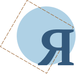

всё смотрел на пароходик. Влезал на стул, чтоб лучше видеть. И всё больше и больше он мне казался настоящим. И непременно должна дверца в будочке отворяться. И наверно, в нём живут человечки. Маленькие, как раз по росту пароходика. Выходило, что они должны быть чуть ниже спички. Я стал ждать, не поглядит ли кто из них в окошечко. Наверно, подглядывают. А когда дома никого нет, выходят на палубу. Лазят, наверно, по лестничкам на мачты.Он не пошёл по прямой дороге домой, где его ждала бы тёплая комната и чашка горячего шоколада. Вместо этого он направился в сторону озера. Сегодня была пятница, а по пятницам у него была своя, особенная традиция — прогулка к дедушке Дастану, который в это время всегда сидел на берегу, подставляя лицо зимнему ветру и глядя на бесконечную водную гладь.
А чуть шум — как мыши: юрк в каюту. Вниз — и притаятся. Я долго глядел, когда был в комнате один. Никто не выглянул. Я спрятался за дверь и глядел в щёлку. А они хитрые, человечки проклятые, знают, что я подглядываю. Ага! Они ночью работают, когда никто их спугнуть не может. Хитрые.
— Вот это уж не проси. Не то играть — трогать не смей. Никогда! Это для меня дорогая память.
Я стал быстро-быстро глотать чай. И запросился спать.
Бабушка говорит:
— Что это? То тебя силком в кровать не загонишь, а тут этакую рань и спать просишься.
И вот, когда улеглись, бабушка погасила свет. И не видно пароходика. Я ворочался нарочно, так что кровать скрипела.
Бабушка:
— Чего ты всё ворочаешься?
— А я без света спать боюсь. Дома всегда ночник зажигают.
— Это я наврал: дома ночью темно наглухо.
Бабушка ругалась, однако встала. Долго ковырялась и устроила ночник. Он плохо горел. Но всё же было видно, как блестел пароходик на полке.
Я закрылся одеялом с головой, сделал себе домик и маленькую дырочку. И из дырочки глядел не шевелясь. Скоро я так присмотрелся, что на пароходике мне всё стало отлично видно. Я долго глядел. В комнате было совсем тихо. Только часы тикали. Вдруг что‑то тихонько зашуршало. Я насторожился — шорох этот на пароходике. И вот будто дверка приоткрылась. У меня дыхание спёрло. Я чуть двинулся вперёд. Проклятая кровать скрипнула. Я спугнул человечка!
Теперь уж нечего было ждать, и я заснул. Я с горя заснул.